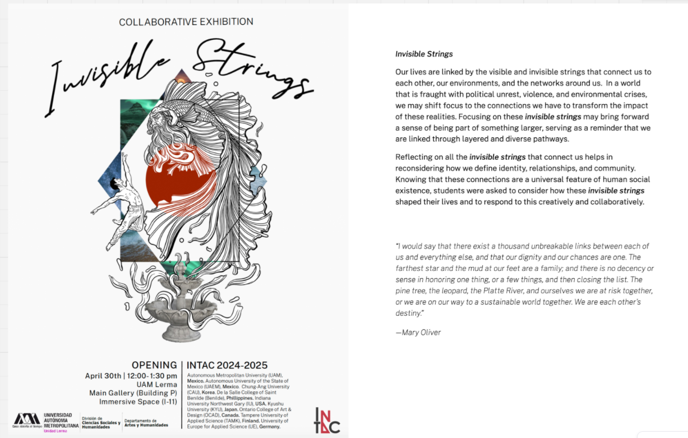
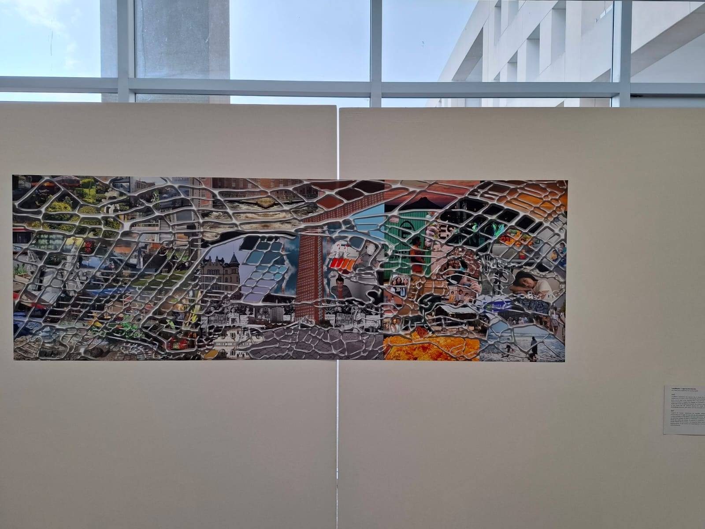

Libro



Exposición colectiva
Ben (TAMK), Ceci de los Ríos (OCAD), Brisa Quevedo (México)
Transforma los trazados urbanos en un lienzo para explorar las conexiones emocionales de un lugar. En esta obra de arte colaborativa, tres artistas internacionales conectan entre sí. La obra se divide en tres partes, una para cada artista. Se invita al espectador a explorar los recuerdos y símbolos trazados en los lugares donde han vivido los artistas. Al explorar la cuadrícula, el público descubre conexiones ocultas entre el mundo interior de los artistas y los espacios físicos que les dan forma.